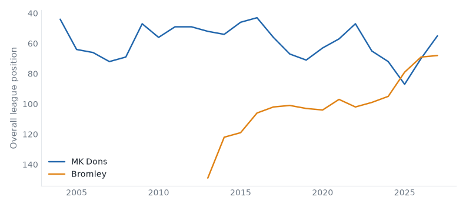
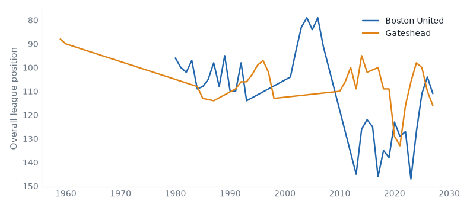

League One, League Two and the National League, 27 October to 02 November 2026. 54 results.Friday's preview.
Leicester 2–2 Stevenage. Friday's case: fallen giant, 2 below level, above level, neighbours, yo-yo club, relegated last season. Leicester up from 11th to 10th; Stevenage down from 13th to 16th.
Wigan 3–2 Bromley. Friday's case: fallen giant, 2 above level, neighbours, champions last season. Wigan up from 24th to 21st; Bromley down from 22nd to 24th.
Fylde 3–1 Hornchurch. Friday's case: 2 above level, yo-yo club. Fylde up from 7th to 4th; Hornchurch down from 13th to 15th.
Stockport 2–1 AFC Wimbledon. Friday's case: above level, yo-yo club. Stockport stay 2nd; AFC Wimbledon down from 17th to 18th.
Fleetwood Town 3–1 Bristol Rvs. Friday's case: below level, neighbours, yo-yo club. Fleetwood Town up from 18th to 16th; Bristol Rvs down from 15th to 17th.
Shrewsbury 1–2 Gillingham. Friday's case: below level, neighbours, yo-yo club. Shrewsbury down from 10th to 15th; Gillingham up from 12th to 8th.
Milton Keynes Dons 4–1 Bromley compare
League One, Tue 27 Oct
Bromley have 9 points from 12 games, their worst start in their record.

Boston Utd 2–1 Gateshead compare
National League, Tue 27 Oct
Gateshead have 4 points from 14 games, their worst start in their record.

Woking 1–2 Boreham Wood compare
National League, Tue 27 Oct
Boreham Wood have 8 wins in a row, their longest run in their record. Boreham Wood have 18 games unbeaten in a row, their longest run in their record. Boreham Wood have 41 points from 15 games, their best start in their record.
Forest Green 2–0 Eastleigh compare
National League, Wed 28 Oct
Eastleigh have 18 points from 15 games, their worst start in their record.
Wigan 3–2 Bromley compare
League One, Sat 31 Oct
Bromley have 9 points from 13 games, their worst start in their record.
Salford 2–1 Exeter compare
League Two, Sat 31 Oct
Salford City have 8 wins in a row, their longest run in their record.
Aldershot 1–0 Gateshead compare
National League, Sat 31 Oct
Gateshead have 4 points from 15 games, their worst start in their record.
Boreham Wood 4–3 Hartlepool compare
National League, Sat 31 Oct
Boreham Wood have 9 wins in a row, their longest run in their record. Boreham Wood have 19 games unbeaten in a row, their longest run in their record. Boreham Wood have 44 points from 16 games, their best start in their record.
Leicester 3–0 Wigan compare
League One, Tue 27 Oct
Leicester City beat Wigan Athletic for the first time since 2013/14.
Oxford 1–0 Stockport compare
League One, Tue 27 Oct
Oxford United beat Stockport County for the first time since 1998/99.
Halifax 2–3 Barrow compare
National League, Tue 27 Oct
Barrow have 24 points from 14 games, their best start since 2016/17.
Hornchurch 1–2 Yeovil compare
National League, Tue 27 Oct
Hornchurch have 21 points from 15 games, their best start since 2013/14.
Worthing 3–3 Southend compare
National League, Tue 27 Oct
Southend United have 29 points from 15 games, their best start since 2011/12.
Fylde 3–1 Hornchurch compare
National League, Fri 30 Oct
Hornchurch have 21 points from 16 games, their best start since 2013/14.
Bradford 0–3 Huddersfield compare
League One, Sat 31 Oct
Huddersfield Town have 28 points from 13 games, their best start since 1994/95.
Grimsby 5–2 York compare
League Two, Sat 31 Oct
Grimsby Town beat York City for the first time since 1989/90.
Port Vale 4–2 Rochdale compare
League Two, Sat 31 Oct
Port Vale beat Rochdale for the first time since 2016/17.
Swindon 2–1 Rotherham compare
League Two, Sat 31 Oct
Swindon Town beat Rotherham United for the first time since 2013/14.
Boston Utd 2–1 Scunthorpe compare
National League, Sat 31 Oct
Scunthorpe United have 10 points from 15 games, their worst start since 2012/13.
Tamworth 0–1 Woking compare
National League, Sat 31 Oct
Tamworth have 17 points from 15 games, their worst start since 2014/15.
| Tue 27 | Leicester | 3–0 | Wigan | ↑1 ↑3 | compare | first win v Wigan Athletic since 2013/14 |
| Tue 27 | Luton | 3–1 | Doncaster | ↑4 ↓2 | compare | best start since 2017/18 |
| Tue 27 | Milton Keynes Dons | 4–1 | Bromley | ↑3 ↓2 | compare | worst start on record |
| Tue 27 | Oxford | 1–0 | Stockport | compare | first win v Stockport County since 1998/99 | |
| Tue 27 | Sheffield Weds | 1–1 | Cambridge | ↓1 | compare | |
| Sat 31 | Barnsley | 1–1 | Oxford | compare | worst start since 2021/22 | |
| Sat 31 | Bradford | 0–3 | Huddersfield | ↓3 | compare | best start since 1994/95 |
| Sat 31 | Leicester | 2–2 | Stevenage | ↑1 ↓3 | compare | worst start since 2021/22 |
| Sat 31 | Leyton Orient | 3–0 | Cambridge | ↑2 ↓1 | compare | |
| Sat 31 | Mansfield | 0–2 | Notts County | ↓2 ↑2 | compare | first win v Mansfield Town since 2018/19 |
| Sat 31 | Milton Keynes Dons | 6–1 | Doncaster | ↑3 ↓2 | compare | worst start since 2021/22 |
| Sat 31 | Peterboro | 0–2 | Luton | ↓1 ↑4 | compare | best start since 2017/18 |
| Sat 31 | Plymouth | 0–0 | Reading | compare | ||
| Sat 31 | Stockport | 2–1 | AFC Wimbledon | ↓1 | compare | |
| Sat 31 | Wigan | 3–2 | Bromley | ↑3 ↓2 | compare | worst start on record |
| Sat 31 | Wycombe | 2–0 | Burton | ↑2 ↓3 | compare | |
| Sun 01 | Sheffield Weds | 1–1 | Blackpool | ↑1 | compare |
| P | W | D | L | GD | Pts | ||
|---|---|---|---|---|---|---|---|
| 1 | Reading | 7 | 5 | 1 | 1 | +10 | 16 |
| 2 | Stockport County | 7 | 5 | 0 | 2 | +7 | 15 |
| 3 | Huddersfield Town | 6 | 4 | 2 | 0 | +9 | 14 |
| 4 | Luton Town | 7 | 4 | 2 | 1 | +5 | 14 |
| 5 | MK Dons | 7 | 3 | 3 | 1 | +5 | 12 |
| 6 | Oxford United | 6 | 3 | 3 | 0 | +5 | 12 |
| 7 | Mansfield Town | 6 | 3 | 2 | 1 | +3 | 11 |
| 8 | Cambridge United | 7 | 3 | 2 | 2 | +1 | 11 |
| 9 | Sheffield Wednesday | 7 | 2 | 4 | 1 | +9 | 10 |
| 10 | Stevenage | 6 | 3 | 1 | 2 | +3 | 10 |
| 11 | Burton Albion | 7 | 2 | 4 | 1 | +2 | 10 |
| 12 | Bradford City | 6 | 3 | 1 | 2 | +1 | 10 |
| 13 | Plymouth Argyle | 7 | 3 | 1 | 3 | +1 | 10 |
| 14 | Leicester City | 7 | 3 | 1 | 3 | -1 | 10 |
| 15 | Leyton Orient | 7 | 3 | 0 | 4 | 0 | 9 |
| 16 | Wycombe Wanderers | 7 | 2 | 3 | 2 | 0 | 9 |
| 17 | AFC Wimbledon | 6 | 2 | 3 | 1 | -1 | 9 |
| 18 | Wigan Athletic | 6 | 3 | 0 | 3 | -3 | 9 |
| 19 | Blackpool | 6 | 2 | 2 | 2 | +1 | 8 |
| 20 | Notts County | 6 | 2 | 2 | 2 | +1 | 8 |
| 21 | Doncaster Rovers | 6 | 2 | 2 | 2 | 0 | 8 |
| 22 | Peterborough United | 6 | 1 | 2 | 3 | -4 | 5 |
| 23 | Barnsley | 6 | 1 | 2 | 3 | -5 | 5 |
| 24 | Bromley | 6 | 1 | 2 | 3 | -10 | 5 |
| Tue 27 | Barnet | 3–1 | York | ↓2 | compare | |
| Fri 30 | Newport County | 4–1 | Chesterfield | ↑2 ↓3 | compare | worst start since 2020/21 |
| Sat 31 | Accrington | 1–1 | Northampton | ↓1 | compare | 8 games unbeaten, longest since 2018/19 |
| Sat 31 | Colchester | 1–3 | Walsall | ↓2 ↑3 | compare | 10 games without a win, longest since 2020/21 |
| Sat 31 | Crewe | 1–1 | Barnet | compare | ||
| Sat 31 | Fleetwood Town | 3–1 | Bristol Rvs | ↑2 ↓2 | compare | worst start since 2021/22 |
| Sat 31 | Grimsby | 5–2 | York | ↑5 ↓2 | compare | first win v York City since 1989/90 |
| Sat 31 | Oldham | 0–1 | Crawley Town | ↓1 | compare | first win v Oldham Athletic since 2020/21 |
| Sat 31 | Port Vale | 4–2 | Rochdale | ↑5 ↓2 | compare | first win v Rochdale since 2016/17 |
| Sat 31 | Salford | 2–1 | Exeter | ↓4 | compare | 8 wins, longest on record |
| Sat 31 | Shrewsbury | 1–2 | Gillingham | ↓5 ↑4 | compare | |
| Sat 31 | Swindon | 2–1 | Rotherham | ↑1 | compare | first win v Rotherham United since 2013/14 |
| Sat 31 | Tranmere | 3–1 | Cheltenham | ↑2 ↓2 | compare | best start since 2020/21 |
| P | W | D | L | GD | Pts | ||
|---|---|---|---|---|---|---|---|
| 1 | Salford City | 7 | 6 | 0 | 1 | +5 | 18 |
| 2 | York City | 7 | 5 | 2 | 0 | +11 | 17 |
| 3 | Cheltenham Town | 7 | 5 | 1 | 1 | +4 | 16 |
| 4 | Newport County | 7 | 4 | 3 | 0 | +8 | 15 |
| 5 | Exeter City | 7 | 4 | 3 | 0 | +6 | 15 |
| 6 | Barnet | 7 | 4 | 2 | 1 | +5 | 14 |
| 7 | Port Vale | 6 | 4 | 2 | 0 | +5 | 14 |
| 8 | Swindon Town | 7 | 4 | 2 | 1 | +5 | 14 |
| 9 | Accrington Stanley | 7 | 3 | 4 | 0 | +5 | 13 |
| 10 | Grimsby Town | 7 | 4 | 1 | 2 | +5 | 13 |
| 11 | Crewe Alexandra | 7 | 3 | 4 | 0 | +4 | 13 |
| 12 | Bristol Rovers | 7 | 4 | 1 | 2 | +3 | 13 |
| 13 | Chesterfield | 7 | 3 | 3 | 1 | +7 | 12 |
| 14 | Fleetwood Town | 7 | 3 | 3 | 1 | +5 | 12 |
| 15 | Tranmere Rovers | 7 | 3 | 3 | 1 | +5 | 12 |
| 16 | Walsall | 6 | 3 | 2 | 1 | +4 | 11 |
| 17 | Oldham Athletic | 7 | 3 | 1 | 3 | +3 | 10 |
| 18 | Shrewsbury Town | 7 | 3 | 1 | 3 | 0 | 10 |
| 19 | Rochdale | 7 | 3 | 1 | 3 | -3 | 10 |
| 20 | Colchester United | 6 | 2 | 3 | 1 | 0 | 9 |
| 21 | Gillingham | 7 | 2 | 3 | 2 | -1 | 9 |
| 22 | Northampton Town | 6 | 2 | 2 | 2 | +1 | 8 |
| 23 | Rotherham United | 7 | 1 | 5 | 1 | -2 | 8 |
| 24 | Crawley Town | 6 | 0 | 2 | 4 | -6 | 2 |
| Tue 27 | Altrincham | 0–0 | Kidderminster | ↓1 ↓2 | compare | best start since 2017/18 |
| Tue 27 | Boston Utd | 2–1 | Gateshead | ↑2 | compare | worst start on record |
| Tue 27 | Fylde | 3–1 | Hartlepool | ↑3 ↓1 | compare | best start since 2018/19 |
| Tue 27 | Halifax | 2–3 | Barrow | ↓1 | compare | best start since 2016/17 |
| Tue 27 | Hornchurch | 1–2 | Yeovil | ↓2 ↓1 | compare | best start since 2013/14 |
| Tue 27 | Tamworth | 4–1 | Scunthorpe | ↓2 ↓1 | compare | worst start since 2019/20 |
| Tue 27 | Wealdstone | 2–3 | Solihull | ↑1 ↑1 | compare | worst start since 2017/18 |
| Tue 27 | Woking | 1–2 | Boreham Wood | ↑2 | compare | 8 wins, longest on record |
| Tue 27 | Worthing | 3–3 | Southend | ↓1 | compare | best start since 2011/12 |
| Wed 28 | Carlisle | 3–0 | Harrogate | ↑1 | compare | first win v Harrogate Town on record |
| Wed 28 | Forest Green | 2–0 | Eastleigh | ↓1 | compare | worst start on record |
| Wed 28 | Sutton | 2–0 | Aldershot | ↑1 ↑2 | compare | first win v Aldershot Town since 2020/21 |
| Fri 30 | Fylde | 3–1 | Hornchurch | ↑3 ↓2 | compare | best start since 2013/14 |
| Sat 31 | Aldershot | 1–0 | Gateshead | ↑2 | compare | worst start on record |
| Sat 31 | Altrincham | 2–4 | Carlisle | ↓1 ↑1 | compare | |
| Sat 31 | Barrow | 1–1 | Eastleigh | ↓1 | compare | worst start since 2017/18 |
| Sat 31 | Boreham Wood | 4–3 | Hartlepool | ↓1 | compare | 9 wins, longest on record |
| Sat 31 | Boston Utd | 2–1 | Scunthorpe | ↑2 ↓1 | compare | worst start since 2012/13 |
| Sat 31 | Forest Green | 2–2 | Harrogate | ↓1 | compare | best start since 2018/19 |
| Sat 31 | Halifax | 2–0 | Yeovil | ↓1 | compare | best start since 2019/20 |
| Sat 31 | Solihull | 2–1 | Kidderminster | ↑1 ↓2 | compare | best start since 2018/19 |
| Sat 31 | Tamworth | 0–1 | Woking | ↓2 ↑2 | compare | worst start since 2014/15 |
| Sat 31 | Wealdstone | 3–2 | Southend | ↑1 | compare | |
| Sat 31 | Worthing | 0–3 | Sutton | ↓1 ↑1 | compare | best start since 2021/22 |
| P | W | D | L | GD | Pts | ||
|---|---|---|---|---|---|---|---|
| 1 | Boreham Wood | 8 | 7 | 1 | 0 | +14 | 22 |
| 2 | Harrogate Town | 8 | 6 | 1 | 1 | +13 | 19 |
| 3 | FC Halifax Town | 9 | 5 | 2 | 2 | +9 | 17 |
| 4 | Altrincham | 8 | 5 | 1 | 2 | +4 | 16 |
| 5 | Hornchurch | 7 | 5 | 0 | 2 | +6 | 15 |
| 6 | Eastleigh | 8 | 4 | 3 | 1 | +3 | 15 |
| 7 | Yeovil Town | 8 | 4 | 2 | 2 | +9 | 14 |
| 8 | AFC Fylde | 8 | 4 | 2 | 2 | +5 | 14 |
| 9 | Worthing | 9 | 4 | 2 | 3 | +3 | 14 |
| 10 | Barrow | 7 | 4 | 1 | 2 | +6 | 13 |
| 11 | Aldershot Town | 8 | 4 | 1 | 3 | +4 | 13 |
| 12 | Tamworth | 8 | 4 | 1 | 3 | +4 | 13 |
| 13 | Southend United | 7 | 4 | 1 | 2 | +2 | 13 |
| 14 | Sutton United | 8 | 4 | 1 | 3 | -1 | 13 |
| 15 | Carlisle United | 8 | 3 | 3 | 2 | +4 | 12 |
| 16 | Kidderminster Harriers | 8 | 3 | 3 | 2 | +2 | 12 |
| 17 | Forest Green Rovers | 9 | 3 | 2 | 4 | -1 | 11 |
| 18 | Boston United | 9 | 3 | 1 | 5 | -3 | 10 |
| 19 | Hartlepool United | 7 | 3 | 0 | 4 | -1 | 9 |
| 20 | Woking | 8 | 2 | 2 | 4 | -2 | 8 |
| 21 | Scunthorpe United | 6 | 2 | 1 | 3 | +1 | 7 |
| 22 | Wealdstone | 8 | 2 | 1 | 5 | -8 | 7 |
| 23 | Solihull Moors | 9 | 2 | 0 | 7 | -11 | 6 |
| 24 | Gateshead | 6 | 1 | 1 | 4 | -6 | 4 |
Boreham Wood: 19 games unbeaten in a row, equalling their record (2026/27).
Boreham Wood: 9 wins in a row, equalling their record (2026/27).
Salford City: 8 wins in a row, equalling their record (2026/27).
Bradford City: 3 games without scoring in a row; the record is 5 (1994/95).
Built from the English football database, tiers 1–5 from 1958/59. Results from football-data.co.uk. Archived copy.